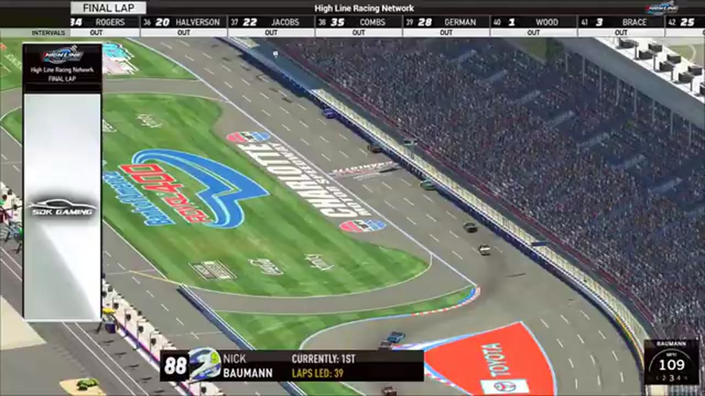

Joe Quan
Team assignment not stated in the structured owner record.
A PODIUM FILE WITH AN OPEN RESULT HORIZON
- Official files
- 6
- Central editions
- 1
- Exact tape cues
- 8
- Accepted podiums
- 1
Joe Quan has 1 position-specific top-three receipt: S1 R9 at Chicagoland (P2). No feature win is currently supported in the accepted result ledger. A consistently stated team affiliation remains open for owner review. The currently indexed source window runs from December 22, 2025 through January 30, 2026.
The official tape index connects the name to 6 race files, 1 Central edition, and 8 primary-broadcast navigation cues. The densest direct-tape categories are incident (3 cues) and restart (2 cues). Those counts describe where the name is easiest to find; they are not fault, pace, or performance grades. A source-attributed car frame is published with its original video and timestamp. That is the current discovery map for Joe Quan.
That is enough for a real result dossier without pretending the archive knows every start or finish. Owner classifications can extend the record later through the same stable race IDs. No Highline Live bonus file is currently attached to this identity. The displayed name is labeled post race self identification; that status remains visible so an owner roster can strengthen or correct the identity without rewriting the evidence trail. Those boundaries define Joe Quan's public HLRN file.
8 featured race-tape cues
These are discovery routes into complete HLRN broadcasts, not performance grades or inferred results.
- S1 / R9 · RESULT
Juan Escamilla is confirmed atop the Chicagoland results
The Chicagoland results readout lists Juan Escamilla first and Trevor Haley third. The P2 driver then enters the booth under the scoring-name rendering 'Stewart,' self-identifies as Joe Quan, and is repeatedly congratulated for second place.
Chicagoland - S1 / R11 · BATTLE
Nick Bowman becomes the Roval's late-race benchmark
After closing the Jerry Fassett and Dave Schutt replay, HLRN returns live and frames Nick Bowman as the driver Brandon Showers, Trevor Haley, and Joe Quan must beat. This is a late-race form check, not an incident involving the leaders.
Charlotte Roval - S1 / R10 · RESTART
Brandon Bikey and Trevor Haley bring Kansas back to green
S1 / R10 at 1:35:17: Brandon Bikey, Trevor Haley, Cory Cook, and Joe Quan are in the booth's front-pack call as Kansas returns to green. The cut keeps the restart launch and the first lap of lane development together.
Kansas - S1 / R9 · RESTART
Chicagoland's scheduled caution freezes Trevor Haley in front
The scheduled caution appears in turn four as the booth expected. HLRN reads Trevor Haley ahead of Juan Escamilla, Joe Quan under the Stewart scoring name, and Joshua McKenna; those leaders are the running order, not participants in a caution replay.
Chicagoland - S1 / R11 · INCIDENT
Randy Switzer and Ricky Miles damage signals queue during a live battle
HLRN receives separate Randy Switzer and Ricky Miles crash signals but stays live with Joe Quan, Matt Brown, Jacob Brown, and Cory Cook racing for position. The caution arrives later, so the card does not merge the signals into one wreck.
Charlotte Roval - S1 / R11 · INCIDENT
Joe Quan saves an opening-lap slide before the Roval caution
The final-restart pack scatters immediately. Joe Quan gets loose and strikes the wall but appears to save the truck; the caution follows later while HLRN searches for what actually caused it.
Charlotte Roval - S1 / R10 · INCIDENT
Evan Perry and Eli Zallo surface in the Kansas caution replay
S1 / R10 at 1:23:35: The caution sequence centers the replay call on Evan Perry, Eli Zallo, and Joe Quan. This is a source-bounded incident window; it preserves what the booth reviews without assigning unsupported fault.
Kansas - S1 / R11 · POSTRACE
Nick Bowman and Trevor Haley anchor the Charlotte Roval post-race result review
S1 / R11 at 2:19:38: The reviewed live-race close has passed before this Charlotte Roval result booth review begins with Nick Bowman, Trevor Haley, Jacob Brown, and Joe Quan named in the discussion. It remains post-race context, not a new incident, stage, strategy call, finish, or result receipt.
Charlotte Roval
Recent editions connected to Joe Quan
Verified team history is not consistently stated. Complete starts, finishes, and points remain open beyond the recovered results. The public spelling has broadcast identity support; an owner roster can still add legal-name, number, and team-history detail.